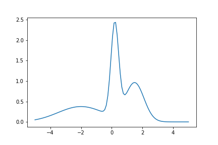

FokkerPlanckEqExample.cpp
Example shows how to calculate solve diffusion equation. As the initial value we use following function:
where n(x,m,s) is density of normal distribution with mean m and standard deviation s.

We solve following equation
for  and . We used Dirichlet boundary conditions, setting 0 for both ends. We used Crank-Nicolson Scheme with uniform grid.
and . We used Dirichlet boundary conditions, setting 0 for both ends. We used Crank-Nicolson Scheme with uniform grid.

#include <marian.hpp>
#include <cmath>
using namespace marian;
double func(double x) {
double s1 = 0.25;
double m1 = 0.2;
double ret = (1.0 / sqrt(3.14159*s1*s1))*exp(-pow(x-m1,2)/(2.0*s1*s1));
double s2 = 0.6;
double m2 = 1.5;
ret += (1.0 / sqrt(3.14159*s2*s2))*exp(-pow(x-m2,2)/(2.0*s2*s2));
double s3 = 1.5;
double m3 = -2.0;
ret += (1.0 / sqrt(3.14159*s3*s3))*exp(-pow(x-m3,2)/(2.0*s3*s3));
return ret;
}
int main () {
//
// Process
//
ConvectionDiffusion process;
process.diffusion = 2.0;
process.convection = 0.1;
process.decay = 0.2;
//
// Grid
//
int nspatial = 100;
int ntemporal = 400;
UniformGridBuilder ugb;
auto temporal_grid = ugb.buildGrid( 0.0, 1.5, ntemporal);
//
// Boundary conditions
//
auto dbc_func = [](double)->double{return 0.0;};
std::vector<SmartPointer<BoundaryCondition> > bcs;
bcs.push_back(lowbc);
bcs.push_back(uppbc);
//
// initial conditions
//
std::vector<double> f;
for (auto x : spatial_grid) {
f.push_back(func(x));
}
// Schemes
LUSolver trisolver;
CrankNicolsonScheme cnscheme(trisolver);
ForwardKolmogorowEquation fokker_planck_equation(process);
auto fdmcn = fokker_plack_equation.solveAndSave(cnscheme, f, bcs, spatial_grid, temporal_grid, "fokker_planck_equation");
}